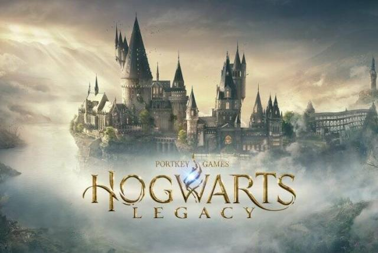
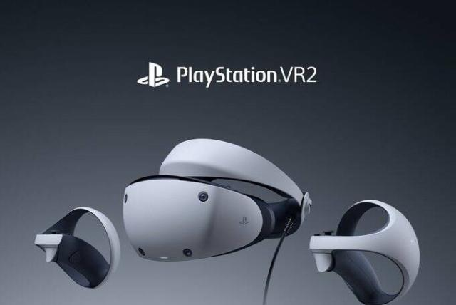
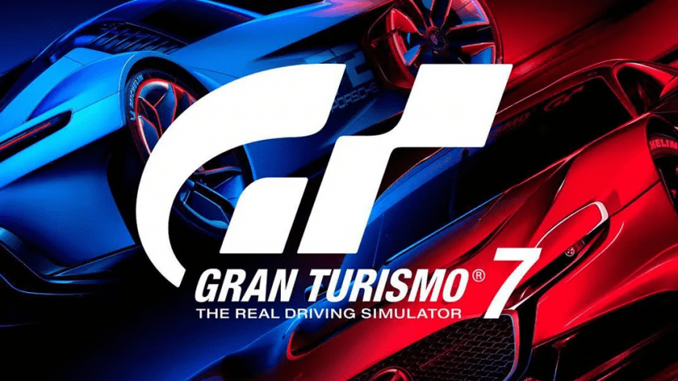
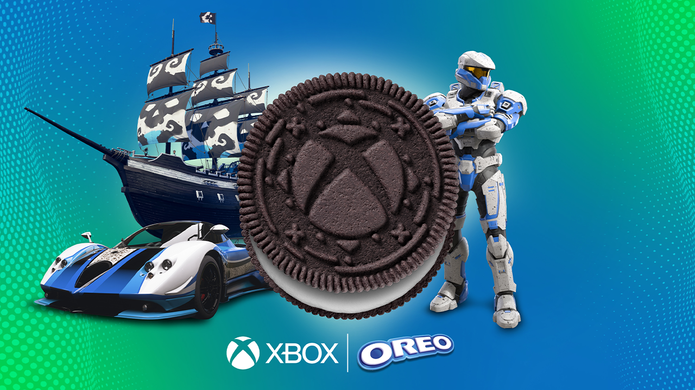
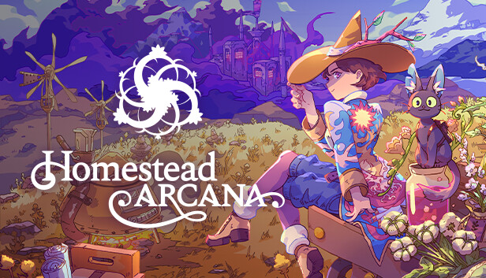
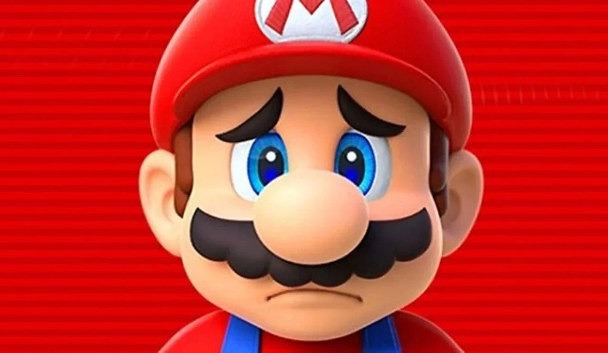
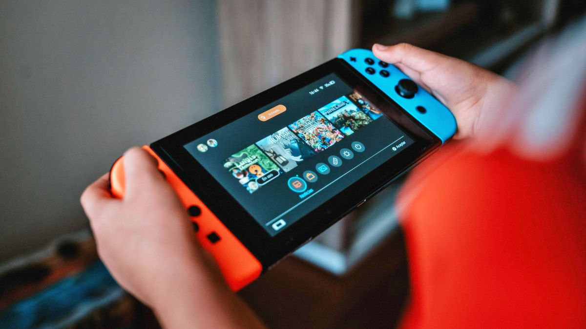

PC 24/01/2023 El combo galáctico para PC ha llegado: si compras un procesador AMD Ryzen 7000 te llevas Star Wars Jedi: Survivor gratis Hace ya unos cuantos meses que la nueva gama de procesadores AMD Ryzen Serie 7000 están danzando por el mercado. Ahora, la compañía capitaneada por Lisa Su da un motivo extra para optar por sus modelos. Y es que desde hoy mismo podemos adquirir cualquier procesador de la Serie 7000 y llevarnos completamente gratis Star Wars Jedi: Survivor. Estamos hablando de una oferta que estará vigente hasta el próximo 1 de abril de 2023.
20/02/2023 Hogwarts Legacy vetado de Games Done Quick, el mayor evento benéfico de speedruns El evento de speedruns Games Done Quick ha actualizado sus directrices para incluir todos los juegos del universo Harry Potter en su lista de títulos no permitidos, es decir, aquellos videojuegos de los que no se tendrán en cuenta partidas enviadas por los speedrunners. No se especifican los motivos concretos por los que se ha decidido dejar de tener en cuenta a los juegos de Harry Potter (pero, este veto podría ser revisado en el futuro). 
PS5  07/02/2023 Sony devela que tiene más de 100 videojuegos en desarrollo para PlayStation VR2 La realidad virtual sigue siendo una de las apuestas de Sony. PlayStation VR2 ampliará su catálogo con más de 100 videojuegos. El 22 de febrero, se pondrá la venta el PS VR2 a un precio de 599 dólares y por el momento se podrán jugar los títulos que ya se encuentran en la tienda virtual PS Store. No obstante, hay cerca de 100 otros títulos en camino. Así lo confirmó Sony en su más reciente blog “Q&A”.
20/02/2023 Gran Turismo 7 se actualiza el 21 de febrero con cinco nuevos coches, un circuito, soporte para PS VR2. Los jugadores de PS5 disfrutarán de Gran Turismo 7 en modo VR a partir de mañana, aunque en PS4 también llegarán los nuevos coches, eventos y circuitos de esta update. A partir de mañana, los jugadores de Gran Turismo 7 podrán descargar la nueva actualización, que incorpora una serie de novedades al título. En el caso de PS5, hablamos también de la versión adaptada para PS VR2, que es totalmente gratis si ya tenéis el juego. 
XBOX  20/02/2023 Galletas OREO y Xbox renuevan su promoción con regalos directos y sorteos Con los paquetes de OREO y Xbox obtendremos contenido exclusivo para Forza Horizon 5, Halo Infinite y Sea of Thieves, entre otros premios. Atentos a los lineales de vuestros supermercados habituales a partir de ahora, especialmente si gustáis de la marca de galletas número uno del mundo, OREO. La compañía norteamericana ha inspirado sus galletas en Xbox para comercializar unos paquetes de edición especial que llevarán un nuevo nivel de diversión a los juegos de la comunidad verde.
16/02/2023 Anunciado un nuevo juego para Xbox Game Pass que llegará de lanzamiento Se ha descubierto que el indie Homestead Arcana, desarrollado por Serenity Forge, se lanzará durante el mes de abril de 2023 y disfrutará de un lanzamiento directo en Xbox Game Pass, que seguramente lo empujará al éxito de acabar siendo un buen juego. Sacaremos a relucir nuestras embrujadas habilidades agrícolas, mientras exploramos un territorio misteriosamente corrompido por el miasma, que no sabemos qué es. 
NINTENDO SWITCH  20/02/2023 Este es el peor juego de Super Mario según la crítica Si hablamos de juegos malos de Super Mario, probablemente todos pensemos en Hotel Mario, esa atrocidad que fue lanzada en su día para la Phillips CD-i. No obstante, no nos engañemos: ese se trata de un juego que nadie apenas ha jugado, y que ni siquiera Nintendo reconoce a día de hoy. Siendo Mario Party Advance el peor juego protagonizado por Mario
19/02/2023 Rumor: La sucesora de Switch también contaría con Nintendo Switch Online En este caso, hemos podido conocer un curioso rumor que apunta a que la sucesora de Switch también contaría con este servicio. La información procede de la Autoridad de Mercados y Competencia del Reino Unido, que ha estado investigando el acuerdo de Activision Blizzard Xbox y también ha analizado numerosos documentos de otras compañías como Sony y Nintendo. 